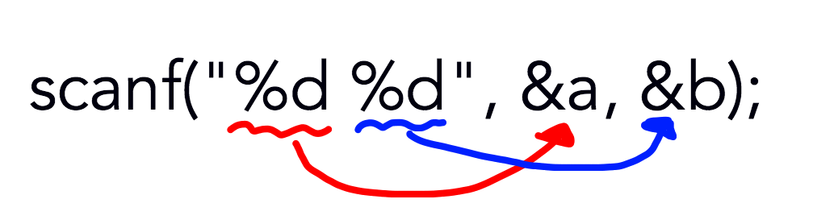

ここまでで、出力や変数の扱いについては分かったね!!
でも、毎回違う数を変数に入れて、処理をして出力したい場合、毎回プログラムを変更する必要が出てきてしまうね。
毎回、変数に入れる数を自分で「入力」することができたら、プログラムを変更しなくても良さそう!!
というわけで、今回は変数への入力をやっていくよ。
#include <stdio.h>
int main(){
// 変数の宣言
int a, b;
// 変数へ入力
scanf("%d %d", &a, &b);
// 変数の中身の出力
printf("a = %d b = %d\n", a, b);
return(0);
}
「
scanf」という関数を使っているね。 これを使うと、入力ができるみたい。
書き方は、「
printf」に似てるね。でも、変数のまえに「
&」がついていることに注意が必要だよ。

上の図のような感じで、変数に入力されるよ。
「
printf」の時みたいに、変数が増えても、同じように書けば対応できるよ。
「
&」については、「ポインタ」というものが関係してくるよ。
もし、興味があったら、このサイトでは解説しないので、調べてみてね。
(競プロでは滅多に使うことがないよ)
「
printf」の時みたいに、入力する型に応じて、「指定子」を変えていかないといけないよ。
#include <stdio.h>
int main(){{
// 変数宣言
int a;
long long b;
double c;
// int
scanf("%d", &a);
// long long
scanf("%lld", &b);
// double
scanf("%lf", &c);
// 出力
printf("a = %d b = %lld c = %lf\n", a, b, c);
return(0);
}
ここまで、HOJの出番がなくて、HOJが忘れ去られた感じがあったけれど、このサイトは「HOJを使って競技プログラミングを始めてみよう!!」をコンセプトに作られた(あくまでも使ってみようというだけであり、布教ではありません)ので、HOJから問題を出していくよ。
他にも、探せば解ける問題があると思うけれど、問題文的にも問題的にも解けそうな問題を集めてみたよ。
れっつちゃれんじ!!